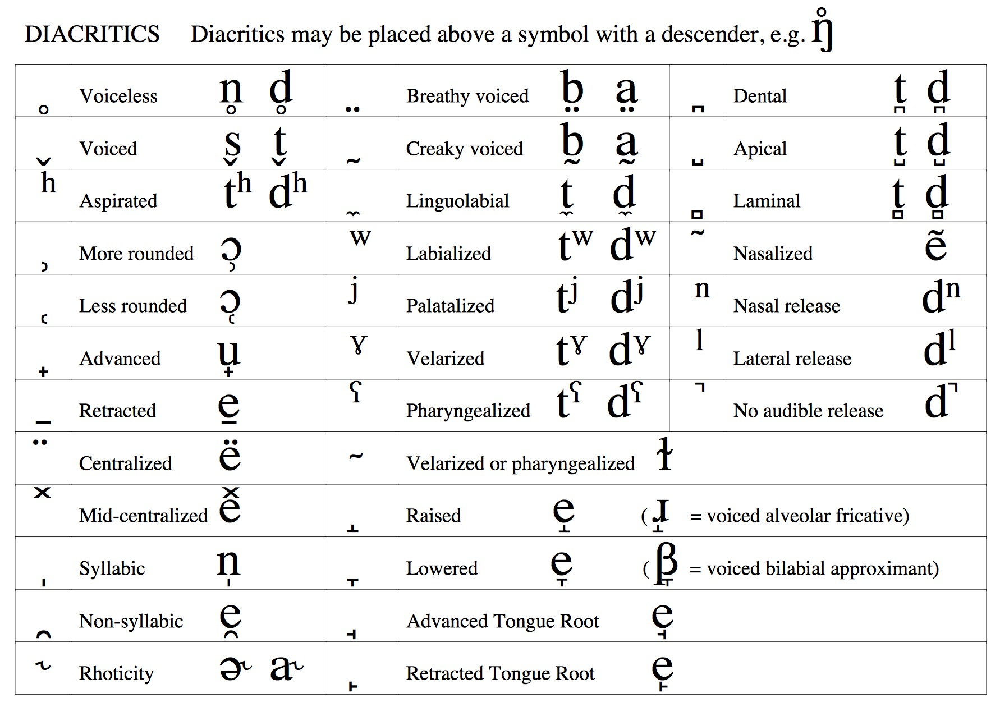
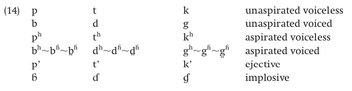

### If you'd like a Textbook to reference, David Odden's "Introducing Phonology" (ISBN 978-1107627970) is a great choice ### All homeworks are now due on Fridays (starting with HW1 next week) The syllabus has been updated ## Grab an IPA/Features Handout by the door! --- ### All Office Hours are now set - Will: Wednesday **10:00-11:00am**, Friday 1:15-2:30pm, AP&M 4151 - Kati: Monday 10:00-11:00am, AP&M 4432 - Michael: Friday 12-1pm, AP&M 3351A --- # Phonetics in Review ### Will Styler - LIGN 111 --- ### Today's Plan - Reviewing the IPA and other speech concepts - General Phonetic Concepts for phonology - Phonetics and Naturalness --- ## How do we describe how speech sounds are made? --- ### We break the world into two kinds of speech sounds - **Consonants:** Constrict, obstruct, or divert air in the vocal tract when being produced - **Vowels:** Shape the (unobstructed) vocal tract to change the sound emitted --- ## Describing Consonants --- ### Three steps to describing Consonants * We need to know three things: * **Place**: Where is the sound made? * **Manner**: What are we doing there? * **Voicing**: Are we making voicing? --- <img class="wide" src="phonmedia/ipa_consonants.jpg"> --- ### Can't figure out where in the mouth that is? Ask [Sammy the Interactive Sagittal Section](http://smu-facweb.smu.ca/~s0949176/sammy/)! --- ### So, that's consonants. --- ## Vowels! --- ### Vowels are created by shaping your vocal tract * A vowel is voicing passing through (and resonating in) an unobstructed vocal tract! * If we change the position of the tongue, we change the resonances --- <img src="phonmedia/voweltongue.png"> --- ### Vowels are different from consonants - They're always* voiced - They can (and do) occur on their own. I. - We describe vowels using different characteristics --- ### Describing Vowels - For vowels, we talk about three additional dimensions - 1) Where is the tongue in terms of height? - (High, Low, or Mid) - Also "Closed, Open, or Mid" - 2) Where is the tongue in terms of horizontal space? - (Front, Central, or Back) - 3) Are your lips rounded or not? --- ### The IPA Vowel Chart  ---  --- <img class="wide" src="phonmedia/ipa_vowels_with_tongue.jpg"> --- ### Diphthongs - Vowels where the tongue moves through the mouth - Start at one vowel, move to another vowel - Things like “boy” (/ɔj/), “buy” (/aj/), “bay” (/ej/), “boat” (/ow/), “cow” (/aw/) - Others are monophthongs --- ### 'Other Symbols'  --- ### Non-Pulmonics  --- ### Suprasegmentals  --- ### Tones  --- ### Diacritics  --- ### This is how phoneticians describe sounds --- ## A few phenomena meriting additional discussion --- ### Aspiration and other Laryngeal Stuff  <small> Thanks to Odden's Introducing Phonology</small> --- ### Nasalization  --- ### Impossible Consonants <img class="wide" src="phonmedia/ipa_consonants.jpg"> --- ### Impossible vowels? --- ### There are some common bits of non-standard IPA - /r/ could mean /r/ or /ɹ/ - š for /ʃ/ - ž for /ʒ/ - č for /tʃ/ - ǰ for /dʒ/ --- ### Non-Standard IPA continued - y for /j/ - ñ for /ɲ/ - Subscript dots for retroflexes - : and ː are both used for length - Numerical tone markings (e.g. bi1 vs. bi5 vs. bi15 vs. bi31) --- ### Always be on the lookout for "This symbol refers to [sound description]" --- # General Phonetic Concepts for Phonology --- ### Not all of phonology believes that it needs phonetics - Government Phonology (c.f. Kaye, Lowenstamm, and Vergnaud 1985) builds a phonology almost devoid of phonetics - Words are built from six primitives, (A), (I), (U), (ʔ), (L) and (H), which are cognitive, not acoustic or articulatory - Individual sounds are generated via licensing, and interactions among primitives ---  --- ### (GP is fascinating, but this is the last time we'll talk about it) --- ## Phonological rules can be approached phonetically --- ### Phonology is not just 'algebra with symbols' - ♇ turns into 🜍 before ☋ - /n/ turns into /ŋ/ before /g/ --- ### Think about the articulatory space  --- ### Think about concepts like coarticulation - *Why* would /k/ be fronted before /i/? --- ### Think about overlap - *Why* would /l/ become voiceless after /pʰ/ --- ### Think about perception - *Why* would adjacent spirants be undesirable? (e.g. why isn't the plural of 'kiss' /kɪss/?) --- ### Think about jaw movement - *Why* is /plʌmp/ legal while /lpʌpm/ wouldn't be? - This is called 'sonority', and is very cool --- ### Think about laziness - *Why* would an /n/ become an /m/ before /b/? --- ### Think about similarity - Are /t/, /b/ and /h/ likely to be three alternate forms of the same sound? - How do we know /ŋ/ and /h/ are different sounds in English? --- ### Much of the concept of "Naturalness" derives from articulation - /m/ often becomes /b/, seldom /k/ - Natural Classes are a phonetic concept --- ### Phonetics can have very subtle effects - Backing favors voicelessness - Geminate consonants are more likely to be voiceless - ... and voiced ones are more likely to be fronted - C.f. Ohala [Aerodynamics of Phonology](http://linguistics.berkeley.edu/~ohala/papers/SEOUL2-aero.pdf) - Ohala, J. J. (1997, August). Aerodynamics of phonology. In Proceedings of the Seoul International Conference on Linguistics (Vol. 92, p. 97). --- ### ... but not all phonological phenomena are phonetically intuitive - Post-nasal devoicing? - Intervocalic devoicing? - Final voicing? - p -> b and k -> g but t -> l (e.g. Lakota) - Often, this is sound change in process --- ### You can't expect all rules to make sense, phonetically - Consider it a "hint", not a rule --- ### Homework 1 will be a quick reminder of phonetic concepts with an eye towards phonology --- ### Next time... - We'll get naturally classy --- <huge>Thank you!</huge> ---